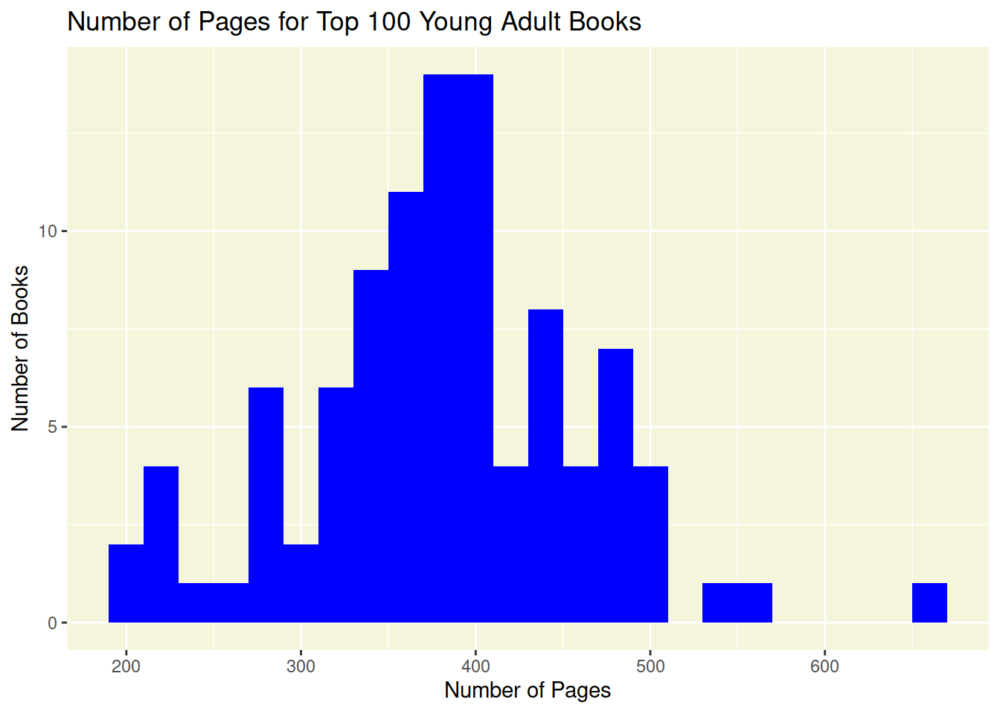
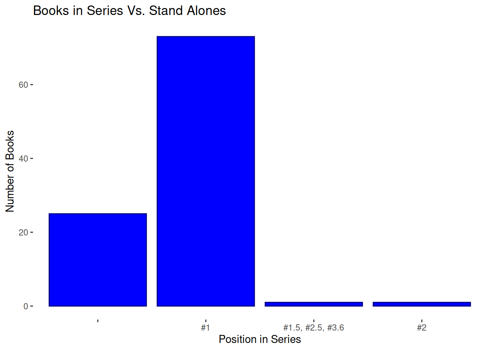
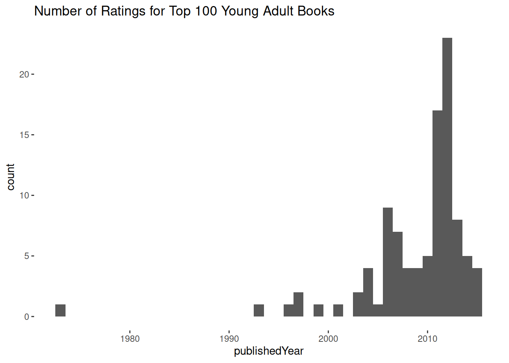
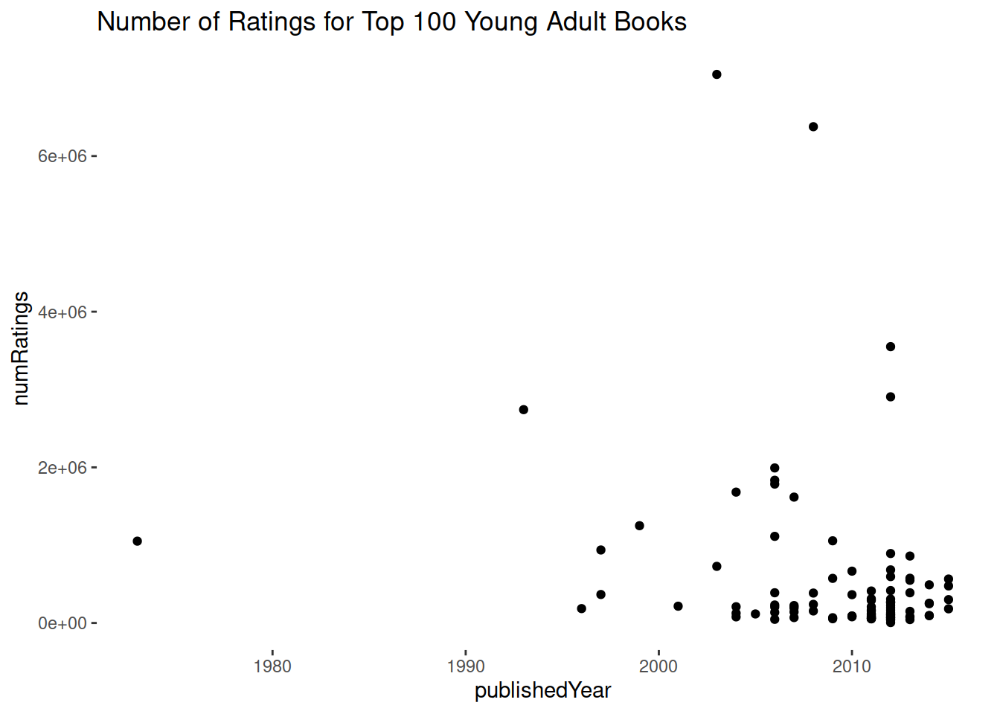

Code
library(tidyverse)
#library(ggplot2)library(tidyverse)
#library(ggplot2)BOOKS <- read.csv("goodreads_Top100_YoungAdultFiction1.csv")An overview of the length of these books. A Histogram.
#Book length (number of pages)
fig <- ggplot(BOOKS, aes(pages))+ geom_histogram(binwidth = 20, fill="blue")
#Style
fig_labs <- labs(title = "Number of Pages for Top 100 Young Adult Books")
fig_theme <- theme(panel.background=element_rect(fill="beige"))
#Showing figure 4
fig <- fig + fig_labs + fig_theme
print(fig)
Series vs Non-Series. A bar plot… maybe?
I would like to figure out how to make this with two bars, one for series and one for stand-alones. Or I would like to change the labels on the bars.
#Series vs non-series
#BOOKS$series_Q <- ifelse(is.na(BOOKS$series), "Stand Alone", "Series")
fig <- ggplot(BOOKS, aes(x = numberOfSeries))+ geom_bar(position = "dodge", color = "navy", fill = "blue")
#Style
fig_label <- labs(title = "Books in Series Vs. Stand Alones")
fig_theme <- theme(panel.background=element_rect(fill="white"))
#Showing figure 4
fig <- fig + fig_label + fig_theme
print(fig)
Number of Books per Genre. An exploration of complex data tables. (In progress…)
How Popular of these books?
A histogram of the number of books with a certain rating and a scatter plot of ratings vs. number of ratings.
#Number of Ratings
fig <- ggplot(BOOKS, aes(x = numRatings))+ geom_histogram(binwidth = 50000)
#Style
fig_labs <- labs(title = "Number of Ratings for Top 100 Young Adult Books")
fig_theme <- theme(panel.background=element_rect(fill="white"))
#Showing figure 4
fig <- fig + fig_labs + fig_theme
print(fig)Warning: Removed 1 rows containing non-finite values (`stat_bin()`).#Number of Ratings vs. Rating
fig <- ggplot(BOOKS, aes(x = numRatings, y = rating))+ geom_point()
#Style
fig_labs <- labs(title = "Number of Ratings for Top 100 Young Adult Books")
fig_theme <- theme(panel.background=element_rect(fill="white"))
#Showing figure 4
fig <- fig + fig_labs + fig_theme
print(fig)Warning: Removed 1 rows containing missing values (`geom_point()`).Multiple Authors? Yes? No? (do I even want to try to make this?)
Setting? An exploration of searching.
Book Format
fig <- ggplot(BOOKS, aes(x = bookFormat))+ geom_bar(position = "dodge", color = "red", fill = "pink")
#Style
fig_label <- labs(title = "Books format: a completly useless graph")
fig_theme <- theme(panel.background=element_rect(fill="white"))
#Showing figure 4
fig <- fig + fig_label + fig_theme
print(fig)
Book Format: series vs non series
Pages by genre
Publisher?
Genre by Publisher
Year published
if year published =/= year first published color (look up how to do this) for popout
#Number of Ratings
fig <- ggplot(BOOKS, aes(x = publishedYear))+ geom_histogram(binwidth = 1)
#Style
fig_labs <- labs(title = "Number of Ratings for Top 100 Young Adult Books")
fig_theme <- theme(panel.background=element_rect(fill="white"))
#Showing figure 4
fig <- fig + fig_labs + fig_theme
print(fig)
Rating Per Year
#Number of Ratings vs. Rating
fig <- ggplot(BOOKS, aes(x = publishedYear, y = numRatings))+ geom_point()
#Style
fig_labs <- labs(title = "Number of Ratings for Top 100 Young Adult Books")
fig_theme <- theme(panel.background=element_rect(fill="white"))
#Showing figure 4
fig <- fig + fig_labs + fig_theme
print(fig)Warning: Removed 1 rows containing missing values (`geom_point()`).
First year published vs year published